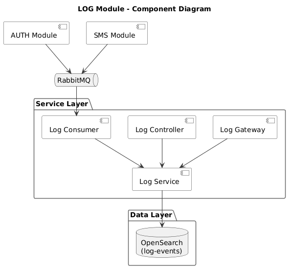
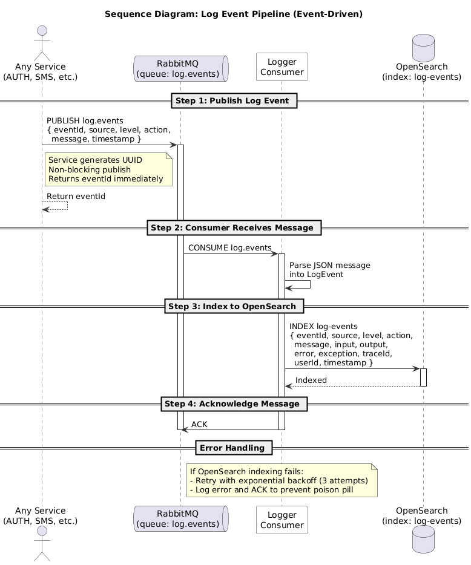
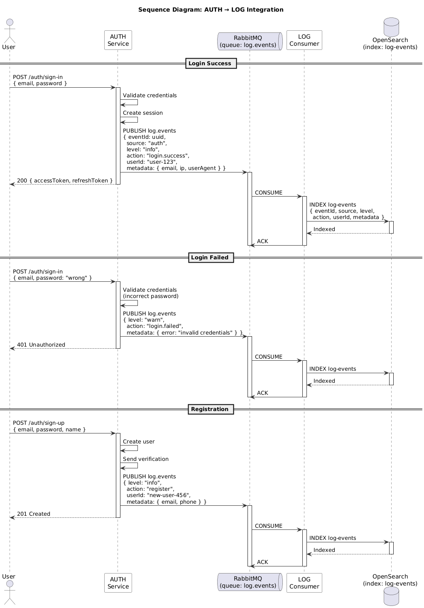
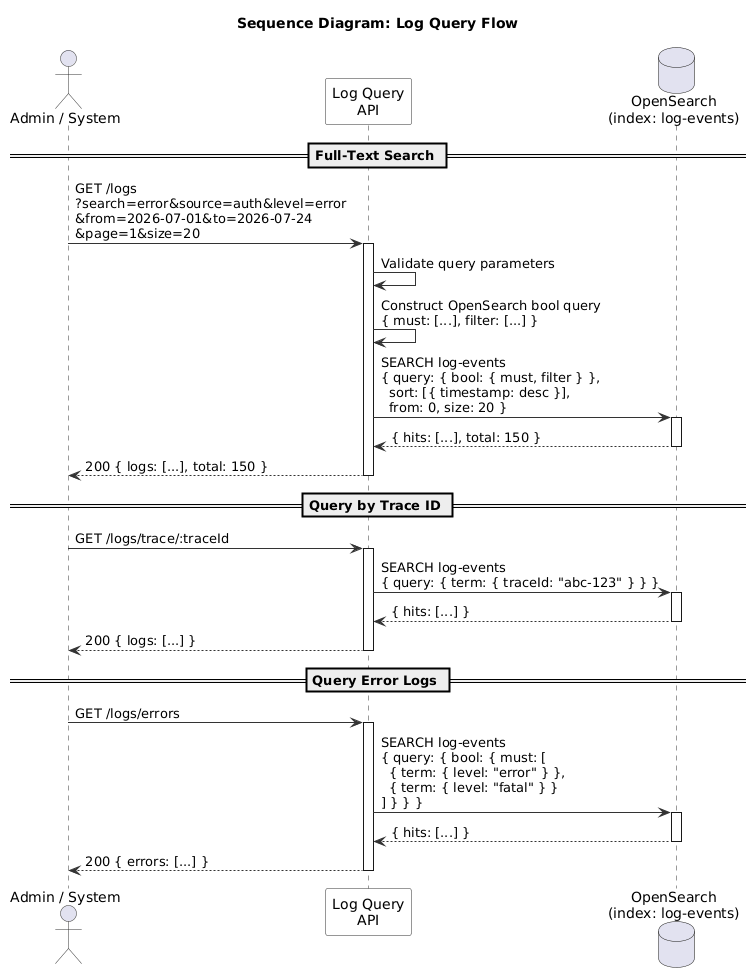
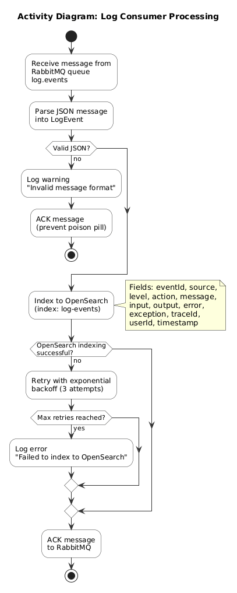

| Phiên bản | 1.0 |
| Hệ thống | Hệ thống Xác thực |
| Module | LOG - Logger |
| Ngày tạo | 2026-08-05 |
| Tác giả | Nam Nguyen |
| Trạng thái | Nháp |
| SRS liên quan | SRS Logger |
Tài liệu này mô tả các quyết định thiết kế kỹ thuật cho module Logger.
| Danh mục | Mã Yêu cầu | Phần Thiết kế |
|---|---|---|
| Chức năng | FR-001 - FR-004 | Phần 3, 5 |
| Phi chức năng | NFR-001 - NFR-004 | Phần 2, 5 |
| Khía cạnh | Quyết định | Giải quyết |
|---|---|---|
| Mẫu | Consumer Driving bởi Sự kiện | NFR-001 |
| Hàng đợi Tin nhắn | RabbitMQ (hàng đợi: log.events) | FR-001 |
| Kho lưu trữ Chính | OpenSearch (chỉ mục: log-events) | FR-002, NFR-002 |
| API | NestJS REST + WebSocket | FR-002, FR-004 |
| # | Quyết định | Lý do | Giải quyết |
|---|---|---|---|
| 1 | OpenSearch làm kho lưu trữ chính | Tìm kiếm toàn văn, tổng hợp, bảng điều khiển | FR-002, FR-003 |
| 2 | RabbitMQ để thu thập | Bộ đệm sự kiện, tách người gửi khỏi người tiêu thụ | NFR-001 |
| 3 | Không dùng PostgreSQL | OpenSearch xử lý tìm kiếm, phân tích và lưu trữ | NFR-004 |

src/
log/
log.module.ts
log.controller.ts # Query API
log.service.ts # OpenSearch operations
log.consumer.ts # RabbitMQ consumer
log.gateway.ts # WebSocket gateway
dto/| Thành phần | Trách nhiệm | Giải quyết |
|---|---|---|
| LogConsumer | Tiêu thụ từ RabbitMQ, chỉ mục lên OpenSearch | FR-001 |
| LogService | Truy vấn, tổng hợp, tìm kiếm log | FR-002, FR-003 |
| LogController | REST API cho truy vấn log | FR-002 |
| LogGateway | WebSocket để phát trực tuyến thời gian thực | FR-004 |
Kho lưu trữ Chính: OpenSearch (chỉ mục: log-events)
Xem thêm: Thiết kế Cơ sở dữ liệu
{
"index": "log-events",
"mappings": {
"properties": {
"eventId": { "type": "keyword" },
"source": { "type": "text", "fields": { "keyword": { "type": "keyword" } } },
"level": { "type": "keyword" },
"action": { "type": "keyword" },
"message": { "type": "text" },
"input": { "type": "text" },
"output": { "type": "text" },
"error": { "type": "text" },
"exception": { "type": "text" },
"metadata": { "type": "object", "enabled": true },
"traceId": { "type": "keyword" },
"userId": { "type": "keyword" },
"timestamp": { "type": "date" }
}
}
}



| Sự kiện | Từ | Giao thức | Hàng đợi | Mô tả |
|---|---|---|---|---|
| auth.event.logged | AUTH | RabbitMQ | log.events | Sự kiện xác thực (đăng nhập, đăng xuất, đăng ký) |
| sms.event.logged | SMS | RabbitMQ | log.events | Sự kiện gửi SMS |
| email.event.logged | RabbitMQ | log.events | Sự kiện gửi email | |
| recruitment.event.logged | RECR | RabbitMQ | log.events | Sự kiện tuyển dụng (hồ sơ, phỏng vấn, đề nghị) |
| wallet.event.logged | WALLET | RabbitMQ | log.events | Sự kiện ví (nạp, rút, chuyển, thanh toán) |
| Dịch vụ | Giao thức | Mục đích |
|---|---|---|
| OpenSearch | REST API | Chỉ mục và truy vấn log |
| RabbitMQ | AMQP | Tiêu thụ sự kiện log |
| Mã YC SRS | Yêu cầu | Phần TDS | Quyết định Thiết kế |
|---|---|---|---|
| FR-001 | Thu thập Sự kiện Log | 3.2, 5.2 | LogConsumer + RabbitMQ + OpenSearch |
| FR-002 | Truy vấn Log | 3.2, 4.2 | LogService + OpenSearch Query API |
| FR-003 | Phân tích Log | 3.2, 4.2 | OpenSearch Aggregations |
| FR-004 | Giám sát Thời gian thực | 3.2 | LogGateway (WebSocket) |
| NFR-001 | 10k sự kiện/giây | 2.1 | RabbitMQ batching + OpenSearch bulk API |
| NFR-002 | Truy vấn < 500ms | 2.2 | OpenSearch indexing + caching |
| NFR-004 | Lưu trữ 90 ngày | 2.2 | ISM policy trong OpenSearch |